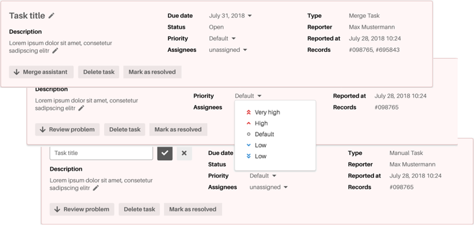

Task overview
The task overview provides several functions for the post processing workflow. Some of these functions are dependent from the task type, e. g. a merge task provides the button 'Merge assistant', while a manual task provides the more general 'Review problem' instead.
The task title and the task description are editable. You can change the text by clicking on edit symbol at the end of the line.
The following functions are available:
|
Merge assistant |
This button is only available in case of a merge task. Click on it to switch to the respective task view. In the task view the merge assistant will be displayed. It allows you to decide whether the task related records should be merged or kept separated. |
|
Review problem |
This button is only available in case of a user defined task. Click on it to switch to the respective task view. In the task view is also record view with the erroneous records displayed. There you can perform several actions on a record to resolve the problem. |
|
Delete task |
Click on 'Delete task' to delete the respective task. |
|
Mark as resolved |
Click on 'Mark as resolved' to accomplish the task and to release the respective records for further processing. |

The following input fields are available:
|
Due date: |
Date, when the task has to be accomplished. The format of the entry can be defined by the user. |
|
Status: |
Status of processing progress of the task, resp. the stage of completion of the task. Possible status designations will be open or resolved. |
|
Priority: |
Priority for accomplishing a task. The available levels are: Very high, high, low and very low. Default level is 'normal'. |
|
Assignee: |
Name of the person that is responsible for accomplishing the task. |
|
Type: |
Category to which the task belongs. Possible types of tasks are:
|
|
Reporter: |
Name of the person that reported the cause of the task. |
|
Reported at: |
Date when the event that caused the task was reported. The format of the entry can be defined by the user. |
|
Records: |
Record ID(s) of the record(s) that is (are) related to the displayed task. |